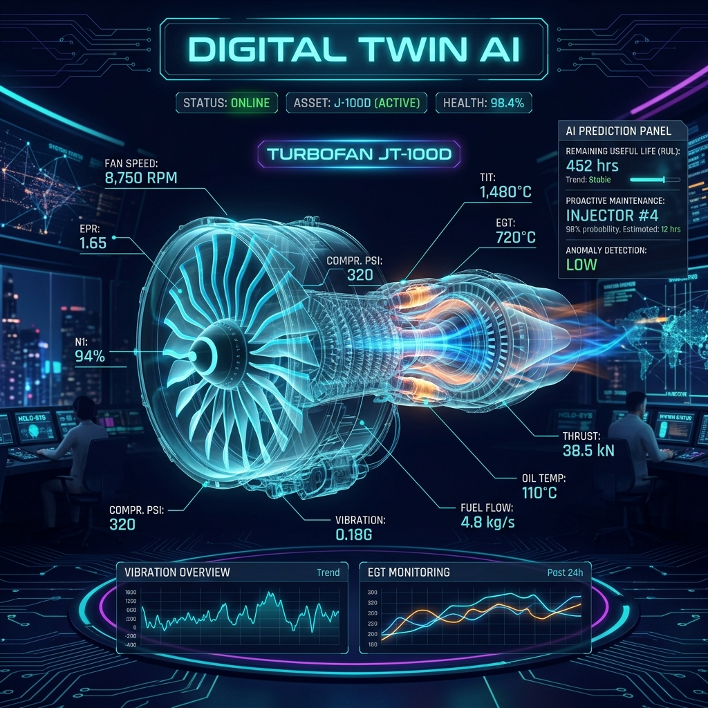

In industrial settings such as aviation and power generation, unplanned equipment failures cost billions annually and can endanger lives. Traditional maintenance approaches are inefficient:
| Approach | Strategy | Problem |
|---|---|---|
| Reactive | Fix after failure | Costly downtime, safety risks |
| Preventive | Schedule-based maintenance | Wastes parts, unnecessary stops |
| Predictive ✅ | AI predicts when failure will occur | Optimal: fix only when needed |
"Given real-time sensor readings from a turbofan engine, can we predict exactly how many operating cycles remain before the engine fails?"
This metric is called Remaining Useful Life (RUL) — the number of cycles left before a critical failure point is reached.
We built a Digital Twin — a virtual mirror of a physical turbofan engine that:
File: train_model.py
Downloads the NASA CMAPSS dataset via KaggleHub, performs feature engineering (dropping constant sensors, scaling), and trains an XGBoost Regressor with GridSearchCV over 81 hyperparameter configurations. Outputs: turbo_model.pkl, scaler.joblib, model_meta.joblib.
File: backend/main.py + backend/model_utils.py
Lightweight edge-computing-style API that simulates IoT sensor streams, runs ML inference, classifies engine health, and serves data via REST and Server-Sent Events (SSE).
| Endpoint | Method | Purpose |
|---|---|---|
/sensor-data | GET | Single sensor snapshot + RUL prediction |
/stream | GET | SSE live stream for real-time updates |
/predict | POST | Custom sensor input → RUL prediction |
/control | POST | Engine control (reset, speed_up, pause) |
/model-info | GET | Model metadata and status |
/health | GET | Health check |
Files: frontend/index.html, script.js, engine3d.js, assets/style.css
Interactive cyberpunk-themed dashboard with a procedurally generated 3D turbofan engine (Three.js), real-time charts (Chart.js), and a Web Audio API alarm system.
The Commercial Modular Aero-Propulsion System Simulation (CMAPSS) dataset from NASA contains run-to-failure sensor data from simulated turbofan engines. Each engine starts healthy and operates until failure.
| Property | Value |
|---|---|
| Dataset | FD001 (single operating condition, single fault mode) |
| Training engines | 100 units |
| Sensors per reading | 21 sensor channels |
| Operational settings | 3 settings |
| Target variable | RUL (Remaining Useful Life in cycles) |
RUL = max_cycle_per_engine - current_cycleWe chose XGBoost for its proven performance on tabular regression tasks. GridSearchCV explored 81 combinations:
param_grid = {
'n_estimators': [200, 400, 600],
'max_depth': [4, 6, 8],
'learning_rate': [0.05, 0.1, 0.2],
'subsample': [0.8, 0.9, 1.0]
}
# Best: n_estimators=600, max_depth=6, lr=0.1, subsample=0.9
The engine is procedurally generated using Three.js geometry primitives — no external 3D model files needed. This keeps the project self-contained and lightweight.
| Component | Geometry | Animation |
|---|---|---|
| Nacelle (Casing) | Translucent cylinder + wireframe | Shimmer effect |
| Fan (18 blades) | Box geometries + cone spinner | Speed driven by sensor_4 |
| LPC (14 blades) | Blade ring + hub torus | 0.85× fan speed |
| HPC (20 blades) | Blade ring + hub torus | 1.2× fan speed |
| Combustion Chamber | Glowing torus + sphere | Pulse driven by sensor_2 |
| HPT (16 blades) | Blade ring (reversed) | Counter-rotating |
| LPT (12 blades) | Blade ring (reversed) | Counter-rotating |
| Exhaust | Cone + 300 particles | Additive-blended stream |
| Sensor Input | Visual Effect |
|---|---|
| Core Speed (sensor_4) | Fan/compressor rotation speed |
| LPC Temperature (sensor_2) | Combustion glow intensity |
| Degradation (0→1) | Engine shake, color shift cyan→orange→red |
| RUL Status | Exhaust particle color, HUD overlays |
8 IoT sensor channels displayed with real-time values, animated progress bars, and flash-on-update effects. Bars shift from cyan to red as degradation increases.
Four key metrics: RUL (cycles), Time to Failure (minutes), AI Confidence (%), and System Status — all color-coded by severity.
| Status | RUL Range | Color | Action |
|---|---|---|---|
| NOMINAL | > 120 cycles | Green | All systems operational |
| WATCH | 60–120 cycles | Cyan | Minor degradation detected |
| WARNING | 20–60 cycles | Orange | Maintenance recommended |
| CRITICAL | 5–20 cycles | Red | Failure in ~10 minutes! |
| FAILURE_IMMINENT | < 5 cycles | Red pulse | Immediate action required |
Speed Up button multiplies degradation rate by 4× per click (up to 32×), allowing judges to see the full NOMINAL → CRITICAL lifecycle in under 30 seconds.
| Layer | Technology | Purpose |
|---|---|---|
| ML Training | XGBoost, scikit-learn, KaggleHub | Model training with GridSearchCV |
| Backend API | FastAPI, Uvicorn, Python 3.11 | REST + SSE endpoints |
| 3D Engine | Three.js v0.164 (ES Modules) | Procedural 3D turbofan |
| Charts | Chart.js 4.4 | RUL trend + sensor telemetry |
| Audio | Web Audio API | Critical alarm beeps |
| Styling | Custom CSS (800+ lines) | Cyberpunk dark theme |
| Dataset | NASA CMAPSS (FD001) | Turbofan run-to-failure data |
# Terminal 1 — Backend cd backend pip install -r requirements.txt python main.py # API runs at http://localhost:8000 # Terminal 2 — Frontend cd frontend python -m http.server 5500 # Dashboard at http://localhost:5500
# Just open in browser — works with local simulation cd frontend python -m http.server 5500
python train_model.py # Downloads NASA CMAPSS via KaggleHub # Outputs: models/turbo_model.pkl, scaler.joblib